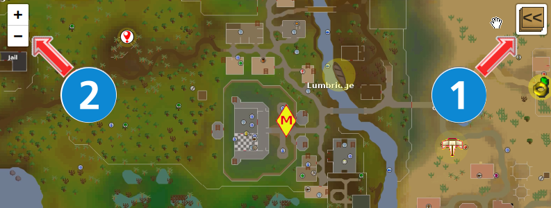

For those already familiar with how to use Leaflet maps, feel free to click anywhere on this screen to close this window and proceed to the map.
Leaflet maps are made up with layers which allow you to select the elements you wish to locate on the map. By clicking the layer control box (designated with the number "1" below) you can choose which layers you want to see.
You can pan around the map using your pointer device and zoom in and out using either your mouse wheel or using the "+" and "-" buttons in the zoom control (designated with the number "2" below).|  |